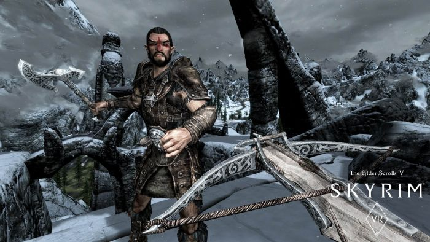
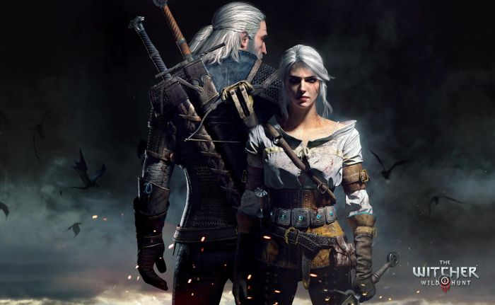

SKYRIM

Piąta odsłona kultowej serii gier The Elder Scrolls. Wciągająca pozycja, która pozwala nam się przenieść w świat pełen wojowników, magów, smoków i wszystkiego innego, co powinno się znaleźć w dobrej fantastyce. Mamy tutaj ciekawą fabułę, która rozbudowana jest o wiele ciekawych zadań pobocznych.
WIEDŹMIN
Trzecia odsłona gry polskiego studia CD Projekt Red, która okazała się fenomenem na skalę światową. Przez wielu uważana za grę wszechczasów. Dwie pierwsze odsłony były również całkiem udane, ale to trzecia część Wiedźmina została wyniesiona na piedestał.
